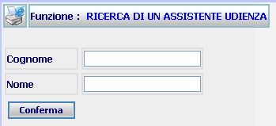

GENERALITA'
RICERCA ASSISTENTE UDIENZA: La funzione, consente
di ricercare un
Esperto già registrato nel sistema.
LE MASCHERE VIDEO
La funzione in
esame viene realizzata attraverso l'utilizzo della seguente maschera
che
riporta gli elementi
descrittivi dei
dati anagrafici dell'Assistente.

COME FARE PER ...
Per ricercare uno o più Assistenti, l'utente deve:
-
Posizionarsi sulla
scheda di Ricerca Assistente Udienza.
-
Introdurre i dati
per i quali si vuole effettuare la ricerca; è possibile anche non introdurre
alcun dato (il sistema ovviamente presenterà la lista di tutti gli
Assistenti relativi all'ufficio di appartenenza)
-
Agire sul pulsante
 per
visualizzare l'Elenco
Assistenti Udienza
dell'ufficio.
per
visualizzare l'Elenco
Assistenti Udienza
dell'ufficio.
CAMPI
I
dati che
consentono di
ricercare un utente sono i seguenti: